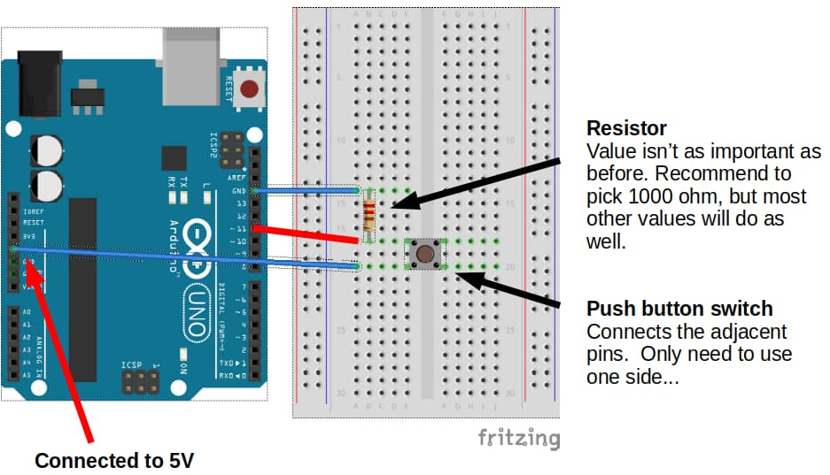

Digital Input
Button
Connect a button to your Arduino as follows...

...then try the following code.
void setup() {
pinMode(13, OUTPUT);
}
void loop() {
if (digitalRead(11) == HIGH) {
digitalWrite(13, HIGH);
} else {
digitalWrite(13, LOW);
}
}
pinMode(13, OUTPUT) : Set pin 13 (built-in LED) to OUTPUT mode. We are using pin 11 (button) in INPUT mode, and since that is the default, we don't need to do anything for pin 11.
if (digitalRead(11) == HIGH) : This checks if pin 11 is HIGH. If the button is pressed, pin 11 will be connected directly to 5V (HIGH). If the button is not pressed, pin 11 will be connected to GND (LOW) through the resistor.
Upload your code. If your wiring and code is correct, the built-in LED should turn on when the button is pressed, and off when it is released.
Button Toggle
To toggle the LED, we'll need to keep track of whether it is off or on using a variable. Whenever the button is pressed, we'll check if the LED is on; if it is on, we'll turn it off, and if it is off, we'll turn it on.
We'll also need to add a short delay, so that the LED won't keep switching between on and off.
bool ledOn = false;
void setup() {
pinMode(13, OUTPUT);
}
void loop() {
if (digitalRead(11) == HIGH) {
if (ledOn) {
digitalWrite(13, LOW);
ledOn = false;
} else {
digitalWrite(13, HIGH);
ledOn = true;
}
delay(500);
}
}
Upload your code. If your wiring and code is correct, the built-in LED should switch between off and on when the button is pressed. Try holding the button down and see what happens. Experiment with changing the delay duration.
Exercise
Write a program that makes the built-in LED toggle between blinking and off when the button is pressed.